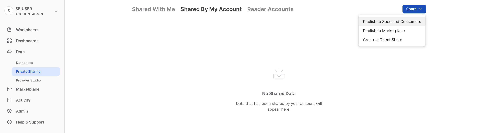

Ti diamo il benvenuto in Snowflake! Questa guida introduttiva, concepita per amministratori e architetti di database e data warehouse, aiuta a orientarsi nell'interfaccia di Snowflake e presenta alcune delle nostre funzionalità fondamentali. Registrati per una prova gratuita di 30 giorni di Snowflake per seguire gli esercizi di questo workshop. Una volta apprese le nozioni di base, sarai in grado di iniziare a elaborare i tuoi dati e affrontare con sicurezza le funzionalità più avanzate di Snowflake.
Hands-On Lab virtuale gratuito
Questa guida a Snowflake è disponibile come Hands-On Lab virtuale gratuito tenuto da un istruttore. Iscriviti oggi stesso al Virtual Hands-On Lab.
Prerequisiti:
- Utilizzo dell'ambiente Snowflake in prova gratuita per 30 giorni
- Conoscenza di base di SQL, dei concetti di database e degli oggetti
- Familiarità con i file CSV delimitati da virgole e con i dati semi-strutturati JSON
Cosa imparerai:
- Come creare stage, database, tabelle, viste e virtual warehouse.
- Come caricare dati strutturati e semi-strutturati.
- Come eseguire query analitiche sui dati in Snowflake, compresi i join tra tabelle.
- Come clonare oggetti.
- Come annullare gli errori dell'utente utilizzando Time Travel.
- Come creare ruoli e utenti e concedere privilegi.
- Come condividere dati con altri account in modo facile e sicuro.
- Come utilizzare i data set disponibili nel Marketplace Snowflake.
Se non l'hai ancora fatto, registrati per una prova gratuita di 30 giorni di Snowflake. Le sezioni successive di questo workshop presuppongono che tu stia utilizzando un nuovo account Snowflake creato al momento della registrazione per la prova gratuita.
L'edizione di Snowflake (Standard, Enterprise, Business Critical, ecc.), il cloud provider (AWS, Azure, GCP) e la regione (US-East, EU, ecc.) che utilizzi per questo workshop sono irrilevanti. Tuttavia, ti consigliamo di selezionare la regione fisicamente più vicina a te e di scegliere Enterprise, il nostro prodotto più diffuso, come edizione di Snowflake.
Al termine della registrazione, riceverai un'email con un link per l'attivazione e un URL per accedere al tuo account Snowflake.
Effettuare l'accesso all'interfaccia utente di Snowflake
Apri una finestra del browser e inserisci l'URL dell'ambiente Snowflake di prova che ti è stato inviato con l'email di registrazione.
Dovrebbe comparire la seguente finestra di login. Immetti il nome utente e la password che hai specificato durante la registrazione:

Componenti dell'interfaccia utente di Snowflake
Facciamo la conoscenza di Snowflake! Questa sezione illustra i componenti di base dell'interfaccia utente. Procederemo dall'alto in basso lungo lato sinistro.

Worksheets

La scheda Worksheets fornisce un'interfaccia per inviare query SQL, eseguire operazioni DDL e DML e visualizzare i risultati una volta completate le query o le operazioni. Per creare un nuovo foglio di lavoro si preme + Worksheet in alto a destra.

L'angolo superiore sinistro contiene:
- Icona Home: puoi utilizzarla per tornare alla console principale e chiudere il foglio di lavoro.
- Menu a discesa Nome_foglio_di_lavoro: Il nome predefinito corrisponde alla data e ora di creazione del foglio di lavoro. Fai clic sul nome del foglio di lavoro per modificarlo. Il menu a discesa visualizza anche altre azioni che puoi eseguire per il foglio di lavoro.
- Pulsante Manage filters: i filtri personalizzati sono parole chiave speciali che producono una sotto-query o un elenco di valori.
L'angolo superiore destro contiene:
- Casella Context: indica a Snowflake quale ruolo e quale warehouse utilizzare durante questa sessione. Può essere modificata dall'interfaccia utente o tramite comandi SQL.
- Pulsante Share: apre il menu di condivisione per condividere con altri utenti o copiare il link a questo foglio di lavoro.
- Pulsante Play/Run: esegue l'istruzione SQL in cui si trova attualmente il cursore o più istruzioni selezionate.
Il riquadro centrale contiene:
- Menu a discesa in alto per impostare il contesto del database/schema/oggetto per il foglio di lavoro.
- Area di lavoro generale in cui immettere ed eseguire query e altre istruzioni SQL.
Il riquadro centrale sinistro contiene:
- Scheda Worksheets: usa questa scheda per selezionare e passare rapidamente da un foglio di lavoro all'altro
- Scheda Databases: usa questa scheda per visualizzare tutti gli oggetti di database disponibili per il ruolo corrente
- Barra di ricerca: browser degli oggetti di database che consente di esplorare tutti i database, gli schemi, le tabelle e le viste accessibili per il ruolo attualmente in uso nel foglio di lavoro.
Il riquadro inferiore visualizza i risultati delle query e delle altre operazioni. Include inoltre quattro opzioni (Object, Query, Result, Chart) che aprono/chiudono i rispettivi riquadri dell'interfaccia utente. Chart apre un riquadro di visualizzazione per i risultati restituiti. Torneremo su questo argomento più avanti.
I vari riquadri di questa pagina possono essere ridimensionati spostandone i cursori. Se ti serve più spazio nel foglio di lavoro, comprimi il browser degli oggetti di database nel riquadro sinistro. Questo riquadro è chiuso in molte delle schermate illustrate in questa guida.
Dashboards

La scheda Dashboards consente di creare visualizzazioni flessibili di uno o più grafici, sotto forma di riquadri che possono essere disposti vari modi. Riquadri e widget vengono prodotti eseguendo query SQL che restituiscono i risultati in un foglio di lavoro. Le dashboard possono essere utilizzate in dimensioni diverse con una configurazione minima.
Databases

La scheda Databases, sotto Data, mostra informazioni sui database che hai creato o a cui puoi accedere. Puoi creare, clonare, eliminare o trasferire la proprietà dei database, oltre a caricare dati nell'interfaccia utente. Nota che nel tuo ambiente esiste già un database. Tuttavia, non lo utilizzeremo in questo workshop.
Private Shared Data

Sempre sotto Data, la scheda Private Shared Data consente di configurare la condivisione dei dati per condividere in modo facile e sicuro tabelle Snowflake tra account Snowflake separati o con utenti esterni, senza bisogno di creare una copia dei dati. Tratteremo la condivisione dei dati nella Sezione 10.
Marketplace

La scheda Marketplace consente a qualsiasi cliente Snowflake di sfogliare e utilizzare data set messi a disposizione dai provider. I dati condivisi sono di due tipi: pubblici e personalizzati. I dati pubblici sono data set gratuiti che possono essere sottoposti immediatamente a query. Nel caso dei dati personalizzati, è necessario contattare il provider dei dati perché ne approvi la condivisione.
Query History

Sotto Activity sono disponibili le due schede Query History e Copy History:
- Query History visualizza le query precedenti e una serie di filtri che possono essere utilizzati per restringere i risultati (utente, warehouse, stato, tag della query, ecc.). Puoi visualizzare i dettagli di tutte le query eseguite negli ultimi 14 giorni dal tuo account Snowflake. Fai clic su un'ID query per selezionarla e visualizzare ulteriori informazioni.
- Copy History mostra lo stato dei comandi di copia eseguiti per caricare dati in Snowflake.
Warehouses

Sotto Admin, la scheda Warehouses consente di configurare e gestire risorse di calcolo dette virtual warehouse per caricare o interrogare i dati in Snowflake. Nel tuo ambiente esiste già un warehouse chiamato COMPUTE_WH.
Resource Monitors

Sotto Admin, la scheda Resource Monitors mostra tutti i monitor delle risorse che sono stati creati per controllare il numero di crediti consumati dai virtual warehouse. Per ogni monitor delle risorse, mostra la quota di credito, il tipo di monitoraggio, la pianificazione e le azioni eseguite quando il virtual warehouse raggiunge il suo limite di credito.
Roles

Sotto Admin, la sottoscheda Roles della scheda Users and Roles mostra un elenco di ruoli con le relative gerarchie. I ruoli possono essere creati, riorganizzati e concessi agli utenti in questa scheda. I ruoli possono essere visualizzati anche sotto forma di tabella/elenco selezionando la sottoscheda Table.
Users

Sempre sotto Admin, la sottoscheda Users della scheda Users and Roles mostra un elenco degli utenti nell'account, dei ruoli predefiniti e del proprietario degli utenti. Per un nuovo account non viene visualizzato alcun ruolo, poiché non sono ancora stati creati ruoli aggiuntivi. Le autorizzazioni concesse attraverso il tuo ruolo corrente determinano le informazioni visualizzate in questa scheda. Per vedere tutte le informazioni disponibili nella scheda, passa al ruolo ACCOUNTADMIN.

Facendo clic sul tuo nome utente in alto a destra nell'interfaccia puoi modificare la password, i ruoli e le preferenze. Snowflake dispone di vari ruoli definiti dal sistema. In questo momento hai il ruolo predefinito di SYSADMIN, che manterrai per la maggior parte del workshop.
La storia
Questo workshop si basa sul team di analisi di Citi Bike, un sistema di bike sharing realmente esistente di New York, negli Stati Uniti. Il team vuole eseguire analisi sui dati provenienti dai sistemi transazionali interni dell'azienda per comprendere meglio i suoi utenti e come servirli nel modo migliore.
Per prima cosa caricheremo in Snowflake i dati .csv strutturati provenienti dalle transazioni degli utenti. Poi lavoreremo con dati meteorologici JSON semi-strutturati open source per stabilire se esiste una correlazione tra il numero di spostamenti in bici e le condizioni meteorologiche.
Per iniziare, prepariamoci a caricare in Snowflake i dati strutturati delle transazioni degli utenti di Citi Bike.
Questa sezione illustra nei dettagli i passaggi necessari per:
- Creare un database e una tabella.
- Creare uno stage esterno.
- Creare un formato di file per i dati.
Useremo i dati del bike sharing forniti da Citi Bike NYC. I dati sono stati esportati e preparati per l'uso in un bucket Amazon AWS S3 nella regione US-EAST e comprendono informazioni sulla durata degli spostamenti, il tipo di utente, il sesso, l'età e così via. Su AWS S3, questi dati rappresentano 61,5 milioni di righe, 377 oggetti e 1,9 GB compressi.
Ecco un frammento di uno dei file di dati CSV di Citi Bike:

È in formato delimitato da virgole con un'unica riga di intestazione e con tutti i valori stringa racchiusi tra virgolette doppie, comprese le intestazioni dei campi nella riga di intestazione. Questo sarà rilevante più avanti in questa sezione, quando configureremo la tabella Snowflake in cui memorizzare questi dati.
Creare un database e una tabella
Per prima cosa creiamo un database chiamato CITIBIKE da utilizzare per caricare i dati strutturati.
Assicurati di utilizzare il ruolo sysadmin selezionando il tuo nome in alto a sinistra e poi Switch Role > SYSADMIN.
Vai alla scheda Databases. Fai clic su Create, assegna al database il nome CITIBIKE e poi fai clic su CREATE.

Ora vai alla scheda Worksheets. Dovresti vedere il foglio di lavoro che abbiamo creato nel passaggio 3.

Dobbiamo impostare il contesto in modo appropriato all'interno del foglio di lavoro. Nell'angolo superiore destro del foglio di lavoro, fai clic sulla casella a sinistra del pulsante Share per visualizzare il menu contestuale, che consente di controllare gli elementi che puoi vedere ed eseguire da ogni foglio di lavoro. Qui stiamo utilizzando l'interfaccia utente per impostare il contesto. Più avanti nel workshop utilizzeremo comandi SQL all'interno del foglio di lavoro per fare la stessa cosa.
Seleziona le seguenti impostazioni del contesto:
Ruolo: SYSADMIN Warehouse: COMPUTE_WH

Quindi, nel menu a discesa del database, seleziona le seguenti impostazioni del contesto:
Database: CITIBIKE Schema = PUBLIC

Per lavorare più facilmente nel foglio di calcolo, rinominiamolo. Nell'angolo superiore sinistro, fai doppio clic sul nome del foglio di lavoro, che corrisponde alla data e all'ora in cui è stato creato, e modificalo in CITIBIKE_ZERO_TO_SNOWFLAKE.
Ora creiamo una tabella chiamata TRIPS da utilizzare per caricare i dati delimitati da virgole. Invece di utilizzare l'interfaccia utente, useremo il foglio di lavoro per eseguire il DDL che crea la tabella. Copia questo testo SQL nel foglio di lavoro:
create or replace table trips
(tripduration integer,
starttime timestamp,
stoptime timestamp,
start_station_id integer,
start_station_name string,
start_station_latitude float,
start_station_longitude float,
end_station_id integer,
end_station_name string,
end_station_latitude float,
end_station_longitude float,
bikeid integer,
membership_type string,
usertype string,
birth_year integer,
gender integer);
Per eseguire la query, colloca il cursore in qualsiasi punto del testo SQL e fai clic sul pulsante blu Play/Run nell'angolo superiore destro del foglio di lavoro. Oppure usa i tasti di scelta rapida [Ctrl]/[Cmd]+[Invio].
Verifica che sia stata creata la tabella TRIPS. Nella parte inferiore del foglio di lavoro dovrebbe essere visualizzata una sezione Results con il messaggio "Table TRIPS successfully created".

Vai alla scheda Databases facendo clic sull'icona HOME nell'angolo superiore sinistro del foglio di lavoro. Quindi fai clic su Data > Databases. Nell'elenco dei database, fai clic su CITIBIKE > PUBLIC > TABLES per vedere la tabella TRIPS appena creata. Se sulla sinistra non vedi i database, espandi il browser, perché potrebbero essere nascosti.

Fai clic su TRIPS e sulla scheda Columns per vedere la struttura della tabella appena creata.

Creare uno stage esterno
Stiamo lavorando con dati strutturati delimitati da virgole che sono già stati preparati per l'uso in un bucket S3 pubblico esterno. Prima di poterli utilizzare, dobbiamo creare uno stage che specifichi la posizione del bucket esterno.
Nella scheda Databases, fai clic sul database CITIBIKE e sullo schema PUBLIC. Fai clic sul pulsante Create e poi su Stage > Amazon S3.

Nella finestra di dialogo "Create Securable Object" che viene visualizzata, sostituisci i seguenti valori nell'istruzione SQL:
citibike_trips
s3://snowflake-workshop-lab/citibike-trips-csv/
Nota: assicurati di includere la barra (/) alla fine dell'URL; in caso contrario si verificheranno errori al momento di caricare i dati dal bucket. Assicurati inoltre di rimuovere l'istruzione ‘credentials = (...)', che non è necessaria. Puoi anche impostarla come commento usando ‘–', come illustrato nell'immagine seguente. Il comando "create stage" dovrebbe essere uguale a quello illustrato, ma potrebbe non includere la terza riga.

Ora esaminiamo il contenuto dello stage citibike_trips. Torna alla scheda Worksheets e apri il foglio di lavoro ‘CITIBIKE_ZERO_TO_SNOWFLAKE' che abbiamo creato, aggiungi la seguente istruzione SQL sotto il codice precedente, come illustrato, quindi esegui:
list @citibike_trips;
Nel riquadro dei risultati in basso dovrebbe comparire l'elenco dei file contenuti nello stage:

Creare un formato di file
Prima di caricare i dati in Snowflake, dobbiamo creare un formato di file corrispondente alla struttura dei dati.
Nel foglio di lavoro, aggiungi nuovamente il seguente comando dopo il testo già presente ed eseguilo per creare il formato di file:
--create file format
create or replace file format csv type='csv'
compression = 'auto' field_delimiter = ',' record_delimiter = '\n'
skip_header = 0 field_optionally_enclosed_by = '\ 042' trim_space = false
error_on_column_count_mismatch = false escape = 'none' escape_unenclosed_field = '\134'
date_format = 'auto' timestamp_format = 'auto' null_if = ('')
comment = 'file format for ingesting data for zero to snowflake';

Verifica che il formato sia stato creato con le impostazioni corrette eseguendo il seguente comando:
--verify file format is created
show file formats in database citibike;
Il formato di file appena creato dovrebbe essere elencato nel riquadro dei risultati:

In questa sezione utilizzeremo un virtual warehouse e il comando COPY per avviare il caricamento in blocco di dati strutturati nella tabella Snowflake che abbiamo creato nella sezione precedente.
Ridimensionare e utilizzare un warehouse per il caricamento dei dati
Per caricare i dati sono necessarie risorse di calcolo. I nodi di calcolo di Snowflake sono detti virtual warehouse e possono essere dimensionati dinamicamente in base al workload, a seconda che si tratti di caricare dati, eseguire una query o svolgere un'operazione DML. Ogni workload può avere il proprio warehouse per evitare contese di risorse.
Vai alla scheda Warehouses (sotto Admin). Qui puoi vedere tutti i tuoi warehouse esistenti e analizzarne i trend di utilizzo.
Nota l'opzione + Warehouse nell'angolo superiore sinistro. Qui puoi aggiungere rapidamente un nuovo warehouse. Tuttavia, vogliamo utilizzare il warehouse COMPUTE_WH già esistente, incluso nell'ambiente di prova di 30 giorni.
Fai clic sulla riga del warehouse COMPUTE_WH. Quindi fai clic sui tre puntini (...) nel testo che compare nell'angolo superiore destro per vedere le azioni che puoi eseguire sul warehouse. Utilizzeremo questo warehouse per caricare i dati da AWS S3.

Fai clic su Edit per esaminare le opzioni di questo warehouse e scoprire alcune delle funzionalità uniche di Snowflake.

- Il menu a discesa Size consente di selezionare la capacità del warehouse. Per le operazioni di caricamento di grandi quantità di dati o per query con esigenze di calcolo più impegnative, è consigliato un warehouse di dimensioni maggiori. Le dimensioni si traducono in risorse di calcolo sottostanti fornite dal cloud provider (AWS, Azure o GCP) su cui risiede in hosting il tuo account Snowflake. Determinano inoltre il numero di crediti consumati dal warehouse per ogni ora intera di attività. Dimensioni maggiori comportano una quantità maggiore di risorse di calcolo del cloud provider allocate al warehouse e un numero maggiore di crediti consumati. Ad esempio, l'impostazione
4X-Largeconsuma 128 crediti per ogni ora intera. Queste dimensioni possono essere aumentate o ridotte in qualsiasi momento con un semplice clic. - Se utilizzi Snowflake Enterprise Edition (o versione superiore), è disponibile l'opzione Query Acceleration. Quando è abilitata per un warehouse, può migliorarne le prestazioni complessive riducendo l'impatto delle query anomale, ossia le query che utilizzano più risorse del normale. Lascia questa opzione disabilitata
- Se utilizzi Snowflake Enterprise Edition (o versione superiore) e l'opzione Multi-cluster Warehouse è abilitata, vedrai alcune opzioni aggiuntive. Qui puoi configurare un warehouse per l'uso di più cluster di risorse di calcolo, fino a un massimo di 10. Ad esempio, se a un warehouse multi-cluster
4X-Largeviene assegnata una dimensione massima dei cluster di 10, può scalare orizzontalmente fino a 10 volte le risorse di calcolo che lo alimentano... e può farlo in pochi secondi! Tuttavia, tieni presente che questo aumenterà il numero di crediti consumati dal warehouse fino a 1280 se tutti i 10 cluster sono attivi per un'ora intera (128 crediti/ora x 10 cluster). La configurazione multi-cluster è ideale per gli scenari di concorrenza, ad esempio quando molti business analyst eseguono simultaneamente query diverse utilizzando lo stesso warehouse. In questo caso d'uso, le diverse query vengono allocate su più cluster per garantire che vengano eseguite rapidamente. - Le opzioni sotto Advanced Warehouse Options consentono di sospendere automaticamente il warehouse quando non è in uso per evitare di consumare inutilmente crediti. Un'altra opzione consente di riavviare automaticamente un warehouse sospeso, in modo che si riattivi automaticamente quando riceve un nuovo workload. Questa funzionalità rende possibile l'efficiente modello di fatturazione "pay-per-use" di Snowflake, che consente di scalare le risorse quando servono e ridurle o disattivarle automaticamente quando non sono più necessarie, eliminando quasi completamente le risorse inattive. Inoltre, è disponibile un'opzione per cambiare il tipo di warehouse da standard a ottimizzato per Snowpark. I warehouse ottimizzati per Snowpark forniscono una quantità di memoria per nodo 16 volte superiore e sono consigliati per i workload con requisiti di memoria elevati, come i casi d'uso di addestramento ML che utilizzano una stored procedure su un unico nodo virtual warehouse. Lascia questa opzione impostata su Standard
Attenzione alla spesa! Nel corso di questo workshop, fai attenzione a non eseguire le seguenti azioni senza un buon motivo, per evitare di consumare troppo rapidamente i tuoi 400 $ di crediti gratuiti:
- Non disabilitare la sospensione automatica. Se la sospensione automatica è disabilitata, i tuoi warehouse rimangono attivi e continuano a consumare crediti anche quando non sono in uso.
- Non utilizzare una taglia del warehouse troppo grande per il tuo workload. Più il warehouse è grande, più crediti consuma.
Utilizzeremo questo virtual warehouse per caricare in Snowflake i dati strutturati contenuti nei file CSV (archiviati nel bucket AWS S3). Tuttavia, prima modificheremo la taglia del warehouse per aumentare le risorse di calcolo utilizzate. Al termine del caricamento dei dati, prendi nota del tempo impiegato; in un passaggio successivo di questa sezione ripeteremo la stessa operazione di caricamento con un warehouse ancora più grande e osserveremo la riduzione del tempo di caricamento.
Modifica la taglia (Size) di questo data warehouse da X-Small a Small. quindi fai clic sul pulsante Save Warehouse:

Caricare i dati
Ora possiamo eseguire un comando COPY per caricare i dati nella tabella TRIPS che abbiamo creato in precedenza.
Torna al foglio di lavoro CITIBIKE_ZERO_TO_SNOWFLAKE nella scheda Worksheets. Assicurati che il contesto del foglio di lavoro sia impostato correttamente:
Ruolo: SYSADMIN Warehouse: COMPUTE_WH Database: CITIBIKE Schema = PUBLIC

Esegui le seguenti istruzioni nel foglio di lavoro per caricare i dati dallo stage nella tabella. Questo può richiedere fino a 30 secondi.
copy into trips from @citibike_trips file_format=csv PATTERN = '.*csv.*' ;
Nel riquadro dei risultati dovrebbe comparire lo stato di ogni file caricato. Una volta completato il caricamento, nel riquadro Query Details in basso a destra puoi scorrere tra i diversi stati, le statistiche degli errori e le visualizzazioni per l'ultima istruzione eseguita:

Ora vai alla scheda Query History facendo clic sull'icona Home e poi su Activity > Query History. Seleziona la query in cima all'elenco, che dovrebbe essere l'istruzione COPY INTO che è stata eseguita per ultima. Seleziona la scheda Query Profile e osserva i passaggi dell'esecuzione della query, i dettagli della query, i nodi più costosi e le statistiche aggiuntive.

Ora carichiamo nuovamente la tabella TRIPS con un warehouse più grande per vedere l'impatto delle risorse di calcolo aggiuntive sul tempo di caricamento.
Torna al foglio di lavoro e usa il comando TRUNCATE TABLE per cancellare tutti i dati e i metadati dalla tabella:
truncate table trips;
Verifica che la tabella sia vuota eseguendo il comando:
--verify table is clear
select * from trips limit 10;
Il risultato dovrebbe essere "Query produced no results".
Modifica la taglia del warehouse in large utilizzando la seguente istruzione ALTER WAREHOUSE:
--change warehouse size from small to large (4x)
alter warehouse compute_wh set warehouse_size='large';
Verifica la modifica utilizzando la seguente istruzione SHOW WAREHOUSES:
--load data with large warehouse
show warehouses;

La taglia può essere modificata anche dall'interfaccia utente, facendo clic sulla casella del contesto del foglio di lavoro e poi sull'icona Configure (3 righe) sul lato destro della casella del contesto e modificando Small in Large nel menu a discesa Size:

Esegui la stessa istruzione COPY INTO utilizzata in precedenza per caricare nuovamente gli stessi dati:
copy into trips from @citibike_trips
file_format=CSV;

Una volta completato il caricamento, torna alla pagina Queries (icona Home > Activity > Query History). Confronta i tempi di esecuzione dei due comandi COPY INTO. Il caricamento con il warehouse Large è stato notevolmente più veloce.
Creare un nuovo warehouse per l'analisi dei dati
Tornando alla storia del workshop, poniamo che il team di Citi Bike voglia eliminare le contese di risorse tra i suoi workload di caricamento dei dati/ETL e gli utenti finali che eseguono le analisi utilizzando strumenti di BI per interrogare Snowflake. Come già accennato, in Snowflake è facile risolvere il problema assegnando warehouse diversi di dimensioni appropriate ai diversi workload. Poiché Citi Bike ha già un warehouse per il caricamento dei dati, creiamo un nuovo warehouse per gli utenti finali che eseguono le analisi. Utilizzeremo questo warehouse per eseguire analisi nella sezione successiva.
Vai alla scheda Admin > Warehouses, fai clic su + Warehouse, assegna al nuovo warehouse il nome ANALYTICS_WH e imposta la taglia su Large.
Se utilizzi Snowflake Enterprise Edition (o versione superiore) e l'opzione Multi-cluster Warehouse è abilitata, vedrai alcune impostazioni aggiuntive:
- Assicurati che Max Clusters sia impostato su
1. - Lascia inalterate tutte le altre opzioni predefinite.

Fai clic sul pulsante Create Warehouse per creare il warehouse.
Negli esercizi precedenti abbiamo caricato dati in due tabelle utilizzando il comando per il caricamento in blocco COPY e il virtual warehouse COMPUTE_WH. Ora assumeremo il ruolo degli utenti di Citi Bike che eseguono le analisi e hanno bisogno di interrogare i dati in quelle tabelle utilizzando il foglio di lavoro e il secondo warehouse ANALYTICS_WH.
Eseguire alcune query
Vai al foglio di lavoro CITIBIKE_ZERO_TO_SNOWFLAKE e cambia warehouse per utilizzare il nuovo warehouse che hai creato nella sezione precedente. Il contesto del foglio di lavoro dovrebbe essere:
Ruolo: SYSADMIN Warehouse: ANALYTICS_WH (L) Database: CITIBIKE Schema = PUBLIC

Esegui la seguente query per vedere un campione dei dati della tabella trips:
select * from trips limit 20;

Ora vediamo alcune statistiche orarie di base sull'utilizzo di Citi Bike. Esegui la seguente query nel foglio di lavoro. Per ogni ora, mostra il numero di spostamenti, la loro durata media e la loro distanza media.
select date_trunc('hour', starttime) as "date",
count(*) as "num trips",
avg(tripduration)/60 as "avg duration (mins)",
avg(haversine(start_station_latitude, start_station_longitude, end_station_latitude, end_station_longitude)) as "avg distance (km)"
from trips
group by 1 order by 1;

Utilizzare la cache dei risultati
Snowflake dispone di una cache dei risultati che memorizza i risultati di ogni query eseguita nelle ultime 24 ore. Questi sono disponibili in tutti i warehouse, quindi i risultati delle query restituiti a un utente sono a disposizione di qualsiasi altro utente del sistema che esegue la stessa query, purché i dati sottostanti non siano cambiati. Non solo queste query ripetute restituiscono risultati molto rapidamente, ma in più non utilizzano crediti per il calcolo.
Vediamo la cache dei risultati in azione eseguendo nuovamente la stessa query.
select date_trunc('hour', starttime) as "date",
count(*) as "num trips",
avg(tripduration)/60 as "avg duration (mins)",
avg(haversine(start_station_latitude, start_station_longitude, end_station_latitude, end_station_longitude)) as "avg distance (km)"
from trips
group by 1 order by 1;
Nel riquadro Query Details sulla destra, nota che la seconda query è stata eseguita molto più rapidamente, poiché i risultati erano memorizzati nella cache.

Eseguire un'altra query
Ora eseguiamo la seguente query per vedere in quali mesi si verifica il maggiore utilizzo:
select
monthname(starttime) as "month",
count(*) as "num trips"
from trips
group by 1 order by 2 desc;

Clonare una tabella
Snowflake consente di creare in pochi secondi cloni, detti anche cloni "zero-copy", di tabelle, schemi e database. Quando viene creato un clone, Snowflake crea uno snapshot dei dati presenti nell'oggetto sorgente e li rende disponibili nell'oggetto clonato. L'oggetto clonato è scrivibile e indipendente dalla sorgente del clone. Di conseguenza, le modifiche apportate all'oggetto sorgente non sono incluse nell'oggetto clone e viceversa.
Un caso d'uso comune per Zero-Copy Cloning è clonare un ambiente di produzione perché i team di sviluppo e test possano utilizzarlo per eseguire test ed esperimenti senza incidere sull'ambiente di produzione, eliminando la necessità di configurare e gestire due ambienti separati.
Esegui il seguente comando nel foglio di lavoro per creare un clone della tabella trips per lo sviluppo (dev):
create table trips_dev clone trips;
Fai clic sui tre puntini (...) nel riquadro a sinistra e seleziona Refresh. Espandi la struttura degli oggetti sotto il database CITIBIKE e verifica che sia presente una nuova tabella chiamata trips_dev. Ora il tuo team di sviluppo può fare ciò che vuole con questa tabella, anche aggiornarla o eliminarla, senza incidere in alcun modo sulla tabella trips o su qualsiasi altro oggetto.

Per tornare all'esempio del workshop, il team di analisi di Citi Bike vuole stabilire l'impatto delle condizioni meteorologiche sul numero di spostamenti. Per farlo, in questa sezione svolgeremo le seguenti operazioni:
- Caricare dati meteorologici in formato JSON semi-strutturato archiviati in un bucket S3 pubblico.
- Creare una vista e interrogare i dati JSON utilizzando la notazione punto di SQL.
- Eseguire una query che unisce i dati JSON ai dati
TRIPScaricati in precedenza. - Analizzare i dati delle condizioni meteorologiche e del numero di spostamenti per stabilire una correlazione.
I dati JSON sono informazioni meteorologiche fornite da MeteoStat riferite alle condizioni storiche nella città di New York City dal 05-07-2016 al 25-06-2019. Sono anche predisposti in uno stage su AWS S3, dove i dati rappresentano 75.000 righe, 36 oggetti e 1,1 MB compressi. In un editor di testo, i dati JSON grezzi contenuti nei file GZ appaiono come segue:

Creare un nuovo database e una nuova tabella per i dati
Per prima cosa, nel foglio di lavoro, creiamo un database chiamato WEATHER che utilizzeremo per memorizzare i dati JSON semi-strutturati.
create database weather;
Esegui i seguenti comandi USE per impostare correttamente il contesto del foglio di lavoro:
use role sysadmin;
use warehouse compute_wh;
use database weather;
use schema public;
Ora creiamo una tabella chiamata JSON_WEATHER_DATA da utilizzare per caricare i dati JSON. Nel foglio di lavoro, esegui questo comando CREATE TABLE:
create table json_weather_data (v variant);
Nota che Snowflake dispone di un tipo di colonna speciale chiamato VARIANT che consente di memorizzare l'intero oggetto come un'unica riga e, quando richiesto, interrogare direttamente l'oggetto.
Nel riquadro dei risultati nella parte inferiore del foglio di lavoro, verifica che sia stata creata la tabella JSON_WEATHER_DATA:

Creare un altro stage esterno
Nel foglio di lavoro CITIBIKE_ZERO_TO_SNOWFLAKE, utilizza il seguente comando per creare uno stage che fa riferimento al bucket in cui sono archiviati i dati JSON semi-strutturati su AWS S3:
create stage nyc_weather
url = 's3://snowflake-workshop-lab/zero-weather-nyc';
Ora esaminiamo il contenuto dello stage nyc_weather. Esegui questo comando LIST per visualizzare l'elenco dei file:
list @nyc_weather;
Nel riquadro dei risultati dovrebbe comparire un elenco di file .gz provenienti da S3:

Caricare e verificare i dati semi-strutturati
In questa sezione utilizzeremo un warehouse per caricare i dati dal bucket S3 nella tabella JSON_WEATHER_DATA che abbiamo creato in precedenza.
Nel foglio di lavoro CITIBIKE_ZERO_TO_SNOWFLAKE, esegui questo comando COPY per caricare i dati.
Nota che puoi specificare un oggetto FILE FORMAT in linea nel comando. Nella sezione precedente, quando abbiamo caricato dati strutturati in formato CSV, abbiamo dovuto definire un formato di file per supportare la struttura CSV. Poiché i dati JSON che dobbiamo utilizzare sono ben formati, possiamo semplicemente specificare il tipo JSON e utilizzare tutte le impostazioni predefinite:
copy into json_weather_data
from @nyc_weather
file_format = (type = json strip_outer_array = true);
Verifica che ogni file abbia lo stato LOADED:

Ora diamo un'occhiata ai dati caricati:
select * from json_weather_data limit 10;
Fai clic su qualsiasi riga per visualizzare i dati JSON formattati nel riquadro a destra:

Per chiudere la visualizzazione nel riquadro e vedere nuovamente i dettagli della query, fai clic sul pulsante X (Chiudi) che compare spostando il mouse nell'angolo superiore destro del riquadro.
Creare una vista e interrogare i dati semi-strutturati
Ora vediamo come Snowflake ci consente di creare una vista e di interrogare direttamente i dati JSON utilizzando SQL.
Esegui il seguente comando per creare una vista in colonne dei dati meteorologici semi-strutturati JSON, che gli analisti potranno comprendere e interrogare più facilmente. Il valore 72502 per station_id corrisponde all'Aeroporto di Newark, la stazione più vicina che dispone delle condizioni meteorologiche per l'intero periodo.
// create a view that will put structure onto the semi-structured data
create or replace view json_weather_data_view as
select
v:obsTime::timestamp as observation_time,
v:station::string as station_id,
v:name::string as city_name,
v:country::string as country,
v:latitude::float as city_lat,
v:longitude::float as city_lon,
v:weatherCondition::string as weather_conditions,
v:coco::int as weather_conditions_code,
v:temp::float as temp,
v:prcp::float as rain,
v:tsun::float as tsun,
v:wdir::float as wind_dir,
v:wspd::float as wind_speed,
v:dwpt::float as dew_point,
v:rhum::float as relative_humidity,
v:pres::float as pressure
from
json_weather_data
where
station_id = '72502';
In questo comando viene utilizzata la notazione punto di SQL v:temp per estrarre valori ai livelli inferiori della gerarchia degli oggetti JSON. Questo ci consente di trattare ciascun campo come se fosse una colonna in una tabella relazionale.
La nuova vista dovrebbe comparire nel browser degli oggetti a sinistra con il nome JSON_WEATHER_DATA sotto WEATHER > PUBLIC > Views. Per vederla potrebbe essere necessario espandere o aggiornare il browser degli oggetti.

Verifica la vista con la seguente query:
select * from json_weather_data_view
where date_trunc('month',observation_time) = '2018-01-01'
limit 20;
Nota che i risultati sono esattamente simili a una normale sorgente di dati strutturati. Il tuo set di risultati potrebbe avere valori diversi per observation_time:

Utilizzare un'operazione di join per stabilire una correlazione tra data set
Ora uniremo dati meteorologici JSON con i dati CITIBIKE.PUBLIC.TRIPS per rispondere alla nostra domanda originale, ossia l'impatto delle condizioni meteorologiche sul numero di spostamenti.
Esegui la seguente query per mettere in join WEATHER a TRIPS e contare il numero di spostamenti associati a determinate condizioni meteorologiche:
select weather_conditions as conditions
,count(*) as num_trips
from citibike.public.trips
left outer join json_weather_data_view
on date_trunc('hour', observation_time) = date_trunc('hour', starttime)
where conditions is not null
group by 1 order by 2 desc;

L'obiettivo iniziale era stabilire se esistesse una correlazione tra il numero di spostamenti in bicicletta e le condizioni meteorologiche analizzando sia i dati sugli spostamenti che quelli sul meteo. I risultati riportati sopra ci forniscono una risposta chiara. Come prevedibile, il numero di spostamenti è significativamente maggiore quando è bel tempo!
La potente funzionalità Time Travel di Snowflake consente di accedere ai dati storici e agli oggetti che li contengono in qualsiasi momento entro un determinato periodo di tempo. La finestra temporale predefinita è di 24 ore e può essere aumentata fino a 90 giorni se si utilizza Snowflake Enterprise Edition. La maggior parte dei data warehouse non è in grado di offrire questa funzionalità, ma naturalmente... Snowflake rende tutto più facile!
Alcune applicazioni utili includono:
- Ripristinare oggetti relativi ai dati come tabelle, schemi e database che sono stati eliminati.
- Duplicare ed eseguire copie di backup dei dati in momenti chiave del passato.
- Analizzare l'utilizzo e la manipolazione dei dati durante periodi di tempo specificati.
Fare il drop e l'undrop di una tabella
Per prima cosa, vediamo come possiamo ripristinare oggetti di dati che sono stati eliminati accidentalmente o intenzionalmente.
Nel foglio di lavoro CITIBIKE_ZERO_TO_SNOWFLAKE, esegui il seguente comando DROP per rimuovere la tabella JSON_WEATHER_DATA:
drop table json_weather_data;
Esegui una query sulla tabella:
select * from json_weather_data limit 10;
Nel riquadro dei risultati in basso dovrebbe comparire un errore, perché la tabella sottostante è stata rimossa:

Ora ripristina la tabella:
undrop table json_weather_data;
La tabella json_weather_data dovrebbe essere ripristinata. Per verificarlo, esegui la seguente query:
--verify table is undropped
select * from json_weather_data limit 10;

Eseguire il rollback di una tabella
Eseguiamo il rollback della tabella TRIPS nel database CITIBIKE a uno stato precedente per correggere un errore DML accidentale che sostituisce tutti i nomi delle stazioni nella tabella con la parola "oops".
Per prima cosa, esegui le seguenti istruzioni SQL per impostare il contesto corretto nel foglio di lavoro:
use role sysadmin;
use warehouse compute_wh;
use database citibike;
use schema public;
Esegui il seguente comando per sostituire tutti i nomi delle stazioni nella tabella con la parola "oops":
update trips set start_station_name = 'oops';
Ora esegui una query che restituisce le prime 20 stazioni per numero di spostamenti. Nota che il risultato per i nomi delle stazioni contiene una sola riga:
select
start_station_name as "station",
count(*) as "rides"
from trips
group by 1
order by 2 desc
limit 20;

Normalmente dovremmo metterci le mani nei capelli e sperare di avere un backup da qualche parte.
In Snowflake, possiamo semplicemente eseguire un comando per trovare l'ID query dell'ultimo comando UPDATE e memorizzarlo in una variabile chiamata $QUERY_ID.
set query_id =
(select query_id from table(information_schema.query_history_by_session (result_limit=>5))
where query_text like 'update%' order by start_time desc limit 1);
Utilizza Time Travel per ricreare la tabella con i nomi delle stazioni corretti:
create or replace table trips as
(select * from trips before (statement => $query_id));
Esegui di nuovo la query precedente per verificare che i nomi delle stazioni siano stati ripristinati:
select
start_station_name as "station",
count(*) as "rides"
from trips
group by 1
order by 2 desc
limit 20;

In questa sezione esploreremo alcuni aspetti del modello di sicurezza per il controllo degli accessi di Snowflake, come la creazione di un ruolo e l'assegnazione di specifiche autorizzazioni. Esamineremo anche altri usi del ruolo ACCOUNTADMIN (amministratore dell'account) che abbiamo presentato brevemente in una delle sezioni precedenti.
Per continuare con la nostra storia, supponiamo che un nuovo DBA sia entrato a far parte del team di Citi Bike e di volergli assegnare un nuovo ruolo con meno privilegi del ruolo SYSADMIN predefinito del sistema.
Creare un nuovo ruolo e aggiungere un utente
Nel foglio di lavoro CITIBIKE_ZERO_TO_SNOWFLAKE, passa al ruolo ACCOUNTADMIN per creare un nuovo ruolo. ACCOUNTADMIN combina i ruoli definiti dal sistema SYSADMIN e SECURITYADMIN. È il ruolo di livello più alto nell'account e deve essere concesso solo a un numero limitato di utenti.
Nel foglio di lavoro CITIBIKE_ZERO_TO_SNOWFLAKE, esegui questo comando:
use role accountadmin;
Nota che in alto a destra nel foglio di lavoro il contesto è cambiato in ACCOUNTADMIN:

Prima di utilizzarlo per il controllo degli accessi, è necessario assegnare a un ruolo almeno un utente. Creiamo quindi un nuovo ruolo chiamato JUNIOR_DBA e assegniamolo all'utente Snowflake. Per completare questa attività devi conoscere il tuo nome utente, che è il nome che hai utilizzato per effettuare l'accesso all'interfaccia utente.
Usa i seguenti comandi per creare il ruolo e assegnarlo a te. Prima di eseguire il comando GRANT ROLE, sostituisci YOUR_USERNAME_GOES_HERE con il tuo nome utente:
create role junior_dba;
grant role junior_dba to user YOUR_USERNAME_GOES_HERE;
Modifica il contesto del foglio di lavoro per passare al nuovo ruolo JUNIOR_DBA:
use role junior_dba;
In alto a destra nel foglio di lavoro, nota che il contesto è cambiato per riflettere il ruolo JUNIOR_DBA.

Inoltre il warehouse non è selezionato, perché il ruolo appena creato non dispone di privilegi di utilizzo per alcun warehouse. Per correggere questo problema, torniamo al ruolo ADMIN e concediamo i privilegi di utilizzo per il warehouse COMPUTE_WH.
use role accountadmin;
grant usage on warehouse compute_wh to role junior_dba;
Torna al ruolo JUNIOR_DBA. Ora dovresti essere in grado di utilizzare COMPUTE_WH.
use role junior_dba;
use warehouse compute_wh;
Infine, puoi notare che nel riquadro del browser degli oggetti di database sulla sinistra non compaiono più i database CITIBIKE e WEATHER. Il motivo è che il ruolo JUNIOR_DBA non dispone dei relativi privilegi di accesso.
Torna al ruolo ACCOUNTADMIN e concedi a JUNIOR_DBA il privilegio USAGE necessario per visualizzare e utilizzare i database CITIBIKE e WEATHER:
use role accountadmin;
grant usage on database citibike to role junior_dba;
grant usage on database weather to role junior_dba;
Passa al ruolo JUNIOR_DBA:
use role junior_dba;
Nota che ora i database CITIBIKE e WEATHER compaiono nel riquadro del browser degli oggetti di database sulla sinistra. Se non compaiono, prova a fare clic su ... nel riquadro e poi fare clic su Refresh.

Visualizzare l'interfaccia utente dell'amministratore dell'account
Impostiamo nuovamente il nostro ruolo di controllo degli accessi su ACCOUNTADMIN per vedere altre aree dell'interfaccia utente accessibili solo con questo ruolo. Tuttavia, per eseguire questa attività, utilizza l'interfaccia utente invece del foglio di lavoro.
Per prima cosa fai clic sull'icona Home nell'angolo superiore sinistro del foglio di lavoro. Quindi, nell'angolo superiore sinistro dell'interfaccia utente, fai clic sul tuo nome per visualizzare il menu delle preferenze utente. Nel menu, vai a Switch Role e seleziona ACCOUNTADMIN.

Nota come, una volta impostata la sessione UI sul ruolo ACCOUNTADMIN, sotto Admin compaiono nuove schede.
Usage

La scheda Usage visualizza le seguenti informazioni, ciascuna con la propria pagina:
- Organization: utilizzo dei crediti in tutti gli account della tua organizzazione.
- Consumption: crediti consumati dai virtual warehouse nell'account corrente.
- Storage: quantità media di dati archiviati in tutti i database, gli stage interni e Snowflake Fail-Safe nell'account corrente per il mese appena trascorso.
- Transfers: quantità media di dati trasferiti fuori dalla regione (per l'account corrente) verso altre regioni per il mese appena trascorso.
I filtri nell'angolo superiore destro di ogni pagina consentono di suddividere le visualizzazioni di utilizzo/consumo/ecc. in base a varie misure.
Security

La scheda Security contiene le policy di rete create per l'account Snowflake. È possibile creare nuove policy di rete selezionando "+ Network Policy" in alto a destra nella pagina.
Billing

La scheda Billing contiene il metodo di pagamento per l'account:
- Se sei un cliente Snowflake con un contratto, la scheda mostra il nome associato ai dati del tuo contratto.
- Se sei un cliente Snowflake on demand, la scheda mostra la carta di credito utilizzata per pagare mensilmente, se è stata inserita. Se non è stata registrata una carta di credito, puoi aggiungerla per continuare a utilizzare Snowflake al termine del periodo di prova.
Per la prossima sezione, mantieni il ruolo ACCOUNTADMIN per la sessione UI.
Snowflake consente l'accesso ai dati con account diversi tramite le funzionalità di Secure Data Sharing. Le condivisioni vengono create dai provider di dati e importate dai data consumer tramite il proprio account Snowflake o un reader account Snowflake attivato. Il data consumer può essere un'entità esterna o un'altra business unit interna, che deve avere il proprio account Snowflake univoco.
Con Secure Data Sharing:
- Esiste una sola copia dei dati, che risiede nell'account del provider di dati.
- I dati condivisi sono sempre aggiornati, in tempo reale e immediatamente disponibili per i data consumer.
- I provider possono stabilire criteri di accesso dettagliati e revocabili alle condivisioni.
- La condivisione dei dati è semplice e sicura, soprattutto in confronto ai vecchi metodi di condivisione, che spesso erano manuali e poco sicuri, come il trasferimento di file
.csvdi grandi dimensioni tramite internet.
Snowflake utilizza Secure Data Sharing per fornire dati sull'utilizzo dell'account e data set campione a tutti gli account Snowflake. In questo contesto, Snowflake funge da provider di dati per i dati e tutti gli altri account.
Secure Data Sharing è anche alla base del Marketplace Snowflake, che è a disposizione di tutti i clienti di Snowflake e consente di trovare e accedere a set di dati di terze parti offerti da numerosi provider di dati e fornitori SaaS. Di nuovo, in questo modello di condivisione i dati non escono mai dall'account del provider e i data set possono essere utilizzati senza alcuna trasformazione.
Visualizzare le condivisioni esistenti
Dalla home page, vai a Data > Databases. Nell'elenco di database, osserva la colonna SOURCE. Dovresti vedere due database con l'indicazione Local in questa colonna. Questi sono i due database che abbiamo creato in precedenza in questo workshop. Per l'altro database, SNOWFLAKE, in questa colonna compare Share, a indicare che è condiviso da un provider.

Creare una condivisione in uscita
Torniamo alla storia di Citi Bike e supponiamo di essere l'amministratore dell'account Snowflake di Citi Bike. Abbiamo un partner di fiducia che desidera analizzare i dati contenuti nel nostro database TRIPS in tempo quasi reale. Anche questo partner ha un account Snowflake nella stessa regione del nostro account. Utilizziamo quindi Secure Data Sharing per consentirgli di accedere a queste informazioni.
Vai a Data > Private Sharing e quindi, nella parte alta della scheda, fai clic su Shared by My Account. Fai clic sul pulsante Share nell'angolo superiore destro e seleziona Create a Direct Share:

Fai clic su + Select Data e vai al database CITIBIKE e allo schema PUBLIC. Seleziona le due tabelle che abbiamo creato in questo schema e fai clic sul pulsante Done:

Il nome predefinito della condivisione è un nome generico seguito da un valore numerico casuale. Sostituisci il nome predefinito con un valore più descrittivo che ci consentirà di identificare più facilmente la condivisione in futuro (ad es. ZERO_TO_SNOWFLAKE_SHARED_DATA. Puoi anche aggiungere un commento.
In una situazione reale, a questo punto l'amministratore dell'account di Citi Bike aggiungerebbe uno o più account consumer alla condivisione, ma per questo workshop ci fermeremo qui.
Fai clic sul pulsante Create Share nella parte inferiore della finestra di dialogo:

La finestra di dialogo si chiude e la pagina mostra la condivisione sicura che hai creato:

Puoi aggiungere data consumer, aggiungere/modificare la descrizione e modificare gli oggetti nella condivisione in qualsiasi momento. In questa pagina, fai clic sul pulsante < accanto al nome della condivisione per tornare alla pagina Share with Other Accounts:

Abbiamo dimostrato che bastano pochi secondi per concedere ad altri account l'accesso ai dati nel tuo account Snowflake in modo sicuro senza bisogno di copiare o trasferire i dati!
Snowflake offre vari metodi per condividere i dati in modo sicuro senza compromettere la confidenzialità. Oltre alle tabelle puoi condividere viste protette, UDF (User Defined Function) protette e altri oggetti protetti. Per maggiori informazioni sull'utilizzo di questi metodi per condividere i dati impedendo l'accesso a informazioni sensibili, consulta la documentazione di Snowflake.
Marketplace Snowflake
Assicurati di utilizzare il ruolo ACCOUNTADMIN e vai al Marketplace:

Trovare un prodotto nel marketplace
La casella di ricerca sul lato superiore consente di cercare un prodotto in catalogo. L'elenco a discesa a destra della casella di ricerca consente di filtrare i risultati per provider, esigenze aziendali e categorie.
Digita COVID nella casella di ricerca, scorri i risultati e seleziona COVID-19 Epidemiological Data (fornito da Starschema).

Nella pagina di COVID-19 Epidemiological Data puoi scoprire di più sul data set e vedere alcune query che ne esemplificano l'uso. Al termine, fai clic sul pulsante Get per rendere disponibili queste informazioni nel tuo account Snowflake:

Verifica le informazioni nella finestra di dialogo e fai nuovamente clic su Get:

Ora puoi fare clic su Done o scegliere di eseguire le query di esempio fornite da Starschema:

Se scegli Open, si apre un nuovo foglio di lavoro in una nuova scheda/finestra del browser:
- Imposta il contesto
- Seleziona la query che vuoi eseguire (o colloca il cursore nel testo della query).
- Fai clic sul pulsante Run/Play (o usa i tasti di scelta rapida).
- Puoi vedere i dati dei risultati nel riquadro in basso.
- Dopo avere eseguito le query di esempio, fai clic sull'icona Home nell'angolo superiore sinistro.

A questo punto:
- Fai clic su Data > Databases
- Fai clic sul database
COVID19_BY_STARSCHEMA_DM. - Puoi vedere i dettagli sugli schemi, le tabelle e le viste disponibili per l'esecuzione di query.

Ecco fatto! Hai completato la registrazione per il data set COVID-19 di Starschema, che viene aggiornato quotidianamente con dati globali sul COVID. Nota che non abbiamo dovuto creare database, tabelle, viste o un processo ETL. Abbiamo semplicemente cercato e ottenuto accesso a dati condivisi dal Marketplace Snowflake.
aside positive Per maggiori informazioni su come utilizzare la nuova interfaccia del foglio di lavoro, consulta la documentazione di Snowsight
Se desideri ripristinare il tuo ambiente eliminando tutti gli oggetti creati nel corso di questo workshop, esegui queste istruzioni SQL in un foglio di lavoro.
Per prima cosa, assicurati di utilizzare il ruolo ACCOUNTADMIN nel foglio di lavoro:
use role accountadmin;
Quindi esegui i seguenti comandi SQL per fare il drop di tutti gli oggetti che abbiamo creato durante il workshop:
drop share if exists zero_to_snowflake_shared_data;
-- If necessary, replace "zero_to_snowflake-shared_data" with the name you used for the share
drop database if exists citibike;
drop database if exists weather;
drop warehouse if exists analytics_wh;
drop role if exists junior_dba;
Congratulazioni per avere completato questo workshop introduttivo! Hai appreso le nozioni fondamentali di Snowflake e puoi iniziare ad applicarle ai tuoi dati. Potrai tornare a consultare questa guida se avrai bisogno di un ripasso.
Ti invitiamo a continuare la tua prova gratuita caricando i tuoi dati di esempio o di produzione e utilizzando alcune delle funzionalità più avanzate di Snowflake non trattate in questo workshop.
Risorse aggiuntive:
- Scopri di più sulla documentazione di Snowsight.
- Leggi il documento Definitive Guide to Maximizing Your Free Trial.
- Partecipa a un evento Snowflake online o in presenza e scopri di più sulle nostre funzionalità e sui nostri clienti.
- Entra a far parte della community Snowflake.
- Iscriviti alla Snowflake University.
- Contatta il nostro team di vendita per maggiori informazioni.
Cosa abbiamo visto:
- Come creare stage, database, tabelle, viste e virtual warehouse.
- Come caricare dati strutturati e semi-strutturati.
- Come eseguire query analitiche sui dati in Snowflake, compresi i join tra tabelle.
- Come clonare oggetti.
- Come annullare gli errori dell'utente utilizzando Time Travel.
- Come creare ruoli e utenti e concedere privilegi.
- Come condividere dati con altri account in modo facile e sicuro.
- Come utilizzare i data set disponibili nel Marketplace Snowflake.